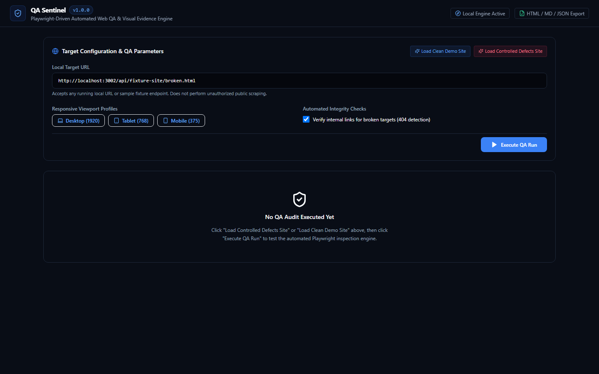
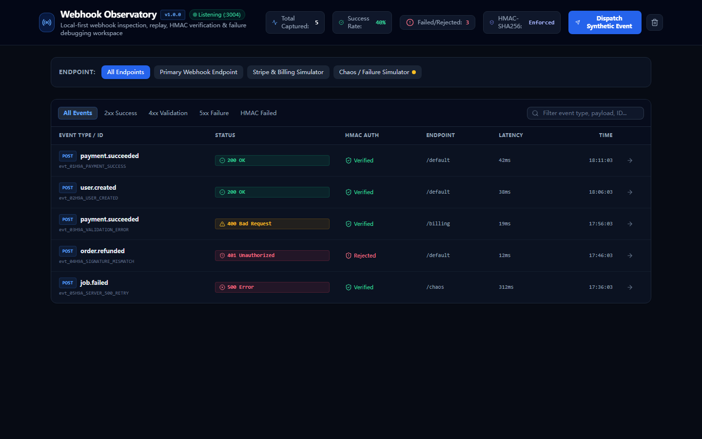
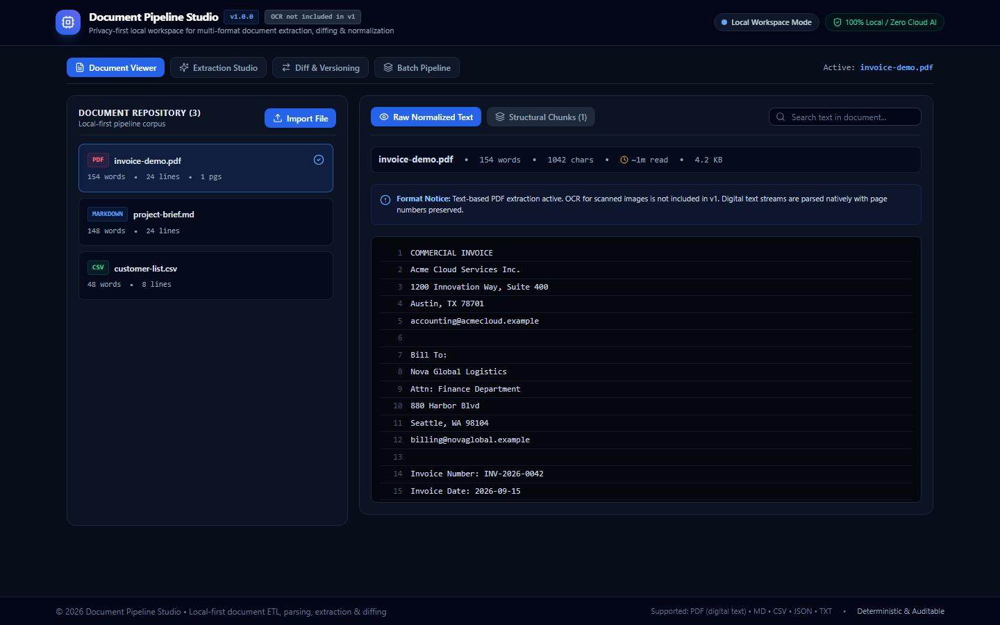
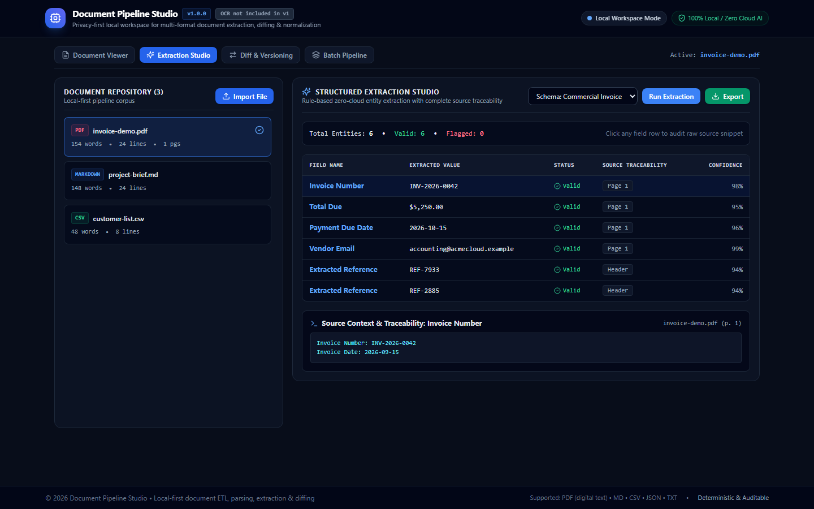

A selected technical portfolio for coding evaluation, agent evaluation, STEM reasoning, software QA and code review.
The work is presented as an engineering record: source, tests, build, runtime evidence and explicit limits.
CODEimplementation
TESTcorrectness
RUNevidence
REVIEWdecision
SOURCE / BUILD / RUNTIME / ACCEPTANCE
7selected projects
6local systems re-run in copies
3public Python suites re-run
0credentials or private sources used
02 / CAPABILITY MAPEVIDENCE OVER CLAIMS
WHAT THE WORK SHOWS
Evaluation is a workflow, not a slogan.
Across the selected projects, implementation is paired with inspection. The recurring pattern is to define the contract, make the result observable, exercise failure paths and keep the final decision traceable.
STEM reasoningalgorithms and systemsgpu-kernel-performance-labTranspose, reduction and GEMM kernels; non-regular dimensions; CPU fallback kept separate from CUDA claims.
AI safetytrust and evidenceRAG poisoning detectionSource risk, conflict graph, evidence factors, red-team samples, quarantine and self-purification.
Software QAbug finding and proof02-qa-sentinelHTTP, console, links, images, forms, SEO and visible overflow across desktop, tablet and mobile.
Traceable processingdata to evidence06-document-pipeline-studioFormat routing, structural chunks, line/page traceability, deterministic extraction and document diffing.
/Operating principle A passing build is a gate, not a conclusion. The result still needs boundary tests, runtime observation and a decision that matches the evidence.
Measure the kernel. Respect the hardware boundary.
The public CUDA lab keeps reference paths, CUDA sources, CMake targets and a benchmark protocol in the same repository. The current evidence is CPU-only, so the portfolio does not convert it into a GPU performance claim.
KERNEL SURFACE
TRANSPOSEnaive global memory / tiled shared memory / padded tile
VECTOR ADDguarded 1D launch / size cap / CPU reference
kernels / transpose.cu
__shared__ float tile[32][32 + 1];
const auto col = blockIdx.x * 32 + threadIdx.x;
const auto row = blockIdx.y * 32 + threadIdx.y;
if (row < rows && col < cols)
tile[threadIdx.y][threadIdx.x] = input[row * cols + col];
__syncthreads();
RECORDED CPU REFERENCE EVIDENCE
CASEBASELINECANDIDATERATIO
transpose 10247.6546 ms3.0880 ms2.479x
transpose 204844.9157 ms18.8515 ms2.383x
reduction 1M1.0542 ms0.9037 ms1.167x
GEMM 2560.6024 ms6.4042 ms0.094x regression
Measurement note Values are from the repository's CPU fallback report. They are useful for protocol and algorithm inspection, not as CUDA throughput evidence.
The workflow treats an Agent suggestion as a candidate patch. It validates paths, applies the diff inside a fresh workspace, runs correctness before timing, and turns benchmark evidence into an explicit decision.
WORKLOADinput + test spec
->
BASELINEbuild / correct / time
->
HYPOTHESISpatch candidate
->
ISOLATEpath check + apply
->
VERIFYcorrectness / stability
->
DECIDEthree-state outcome
REAL CASE STUDIES
CASECORRECTNESSPERFORMANCEDECISION
transposepadded tiled candidatePASS4.3958 -> 0.0452 ms 97.25x CPU-onlyINCONCLUSIVE
reductionprecision candidatePASS0.3335 -> 2.2744 ms 0.147x CPU-onlyREJECT
The first case clears the CPU gate but cannot become a CUDA acceptance without CUDA evidence. The second is correct but regresses and is rejected.
optimizer / evaluator / decision.py
if not correctness_gate["passed"]:
decision = "REJECT"
elif performance_gate["status"] != "PASS":
decision = "REJECT"
elif not performance_gate["cuda_validated"]:
decision = "INCONCLUSIVE"
else:
decision = "ACCEPT"
The decision function encodes what the evidence is allowed to prove.
8 pytest tests passed in the extracted public copy2 case studies re-run locally3 decision states retainedpublic source ->
PROVES evaluation order, workspace isolation and explicit outcomes.DOES NOT PROVE CUDA throughput on this host.
05 / AI SAFETYRAG TRUST + PROVENANCE
RAG POISONING DETECTION + TRUSTED PROVENANCE
Make the evidence chain inspectable.
The public FastAPI prototype combines source attestation, risk signals, claim extraction, conflict analysis, hybrid retrieval, evidence scoring, red-team generation and quarantine. It is presented as a prototype with a known frontend-source boundary.
QA Sentinel turns a local URL or controlled fixture into a reproducible audit. The runner observes the browser, checks page structure and assets, tests three viewports and emits HTML, Markdown and JSON evidence.

Target configuration, local fixture and viewport profiles.
HTTP + console + page errors links + images + buttons + forms title + meta + H1 + overflow
VIEWPORTS
1920 x 1080 desktop 768 x 1024 tablet 375 x 667 mobile
RE-RUN EVIDENCE
2 unit tests passed 1 E2E scenario passed 1 production build passed controlled fixture returned VERDICT: FAIL
Why it matters for Xpert: the project tests both clean and intentionally broken pages, then keeps the failed run inspectable instead of hiding it behind a green summary.
This local-first webhook workbench makes cryptographic verification, contract failures, replay behavior and bounded retries inspectable in one surface.

Captured event inbox with status, HMAC result, endpoint and latency.
Document Pipeline Studio combines a FastAPI parsing engine with a React workspace. The important detail is not only extraction: each field carries source document, page or section, line number and a literal snippet.

Multi-format repository: digital PDF, Markdown and CSV samples.

Rule-based extraction with source traceability and confidence.
PIPELINE
format detection
normalization + structural chunks
standard or custom schema extraction
line/page evidence snippet
diff, batch and JSON/Markdown export
RE-RUN EVIDENCE
12 backend Pytest tests passed 1 frontend E2E flow passed frontend production build passed sample PDF extraction validated
SCOPE BOUNDARY
v1: digital vector text only. Scanned-image PDF OCR is excluded. Scope clarity is part of engineering quality.
Review signal: the backend tests cover format detection, PDF parsing, schema extraction, required-field failure and line diff similarity.
09 / SELECTED ADDITIONAL WORKTOOLS THAT MAKE SYSTEMS OBSERVABLE
SECONDARY EVIDENCE
Range, without quantity theater.
Three additional local systems support the same evaluation profile. They are included here as compact evidence, not as separate marketing stories.
01-mcp-workbenchJSON Schema driven request builder, execution history and read/write-like tool classification.14 unit tests / 2 E2E / build passclassification is heuristic; calculator boundary noted.
05 BrowserOpsManifest V3 minimal permission model, DOM extraction and local CSV/JSON/Markdown serialization.10 unit tests / 1 E2E / build passno Canvas/WebGL or infinite-scroll extraction.
03 Data CleanroomColumn profiling, dedupe, currency/date normalization, rule validation and before/after audit.9 unit tests / 1 E2E / build passbrowser memory workload, about 50,000 rows.
These projects reinforce a consistent pattern: user-scoped access, deterministic transformations, explicit failure states and exportable evidence.
10 / EVIDENCE + PRIVACYFINAL REVIEW NOTES
PORTFOLIO AUDIT
A portfolio that says what is known.
Every project page is tied to a source file, test result, screenshot or public repository. Claims that were not verified are kept out of the final pages.
PASS no names, phone numbers or email accountsPASS no tokens, keys, cookies or SSH materialPASS no browser profile or login statePASS no private repo URL or local path in final PDFPASS synthetic samples only in displayed screenshotsPASS original projects remained read-only
NOT CLAIMED
No game or Minecraft Mod directory was present in the authorized local library scan. No GPU result is presented as a GPU result. No user, star, fork or download metric is used.